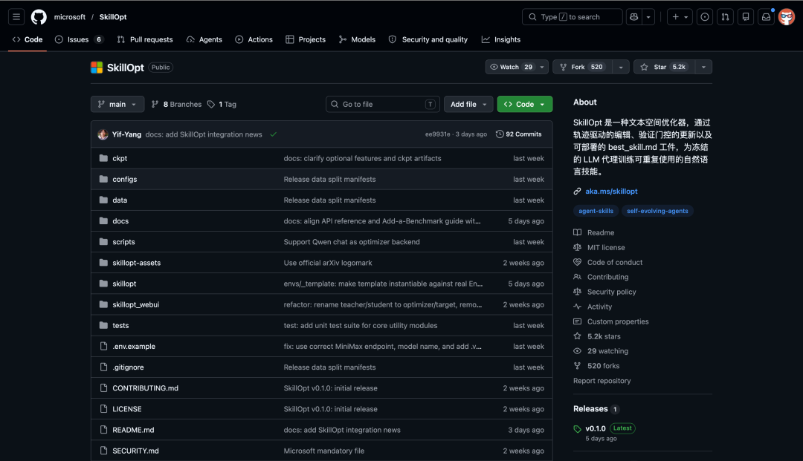
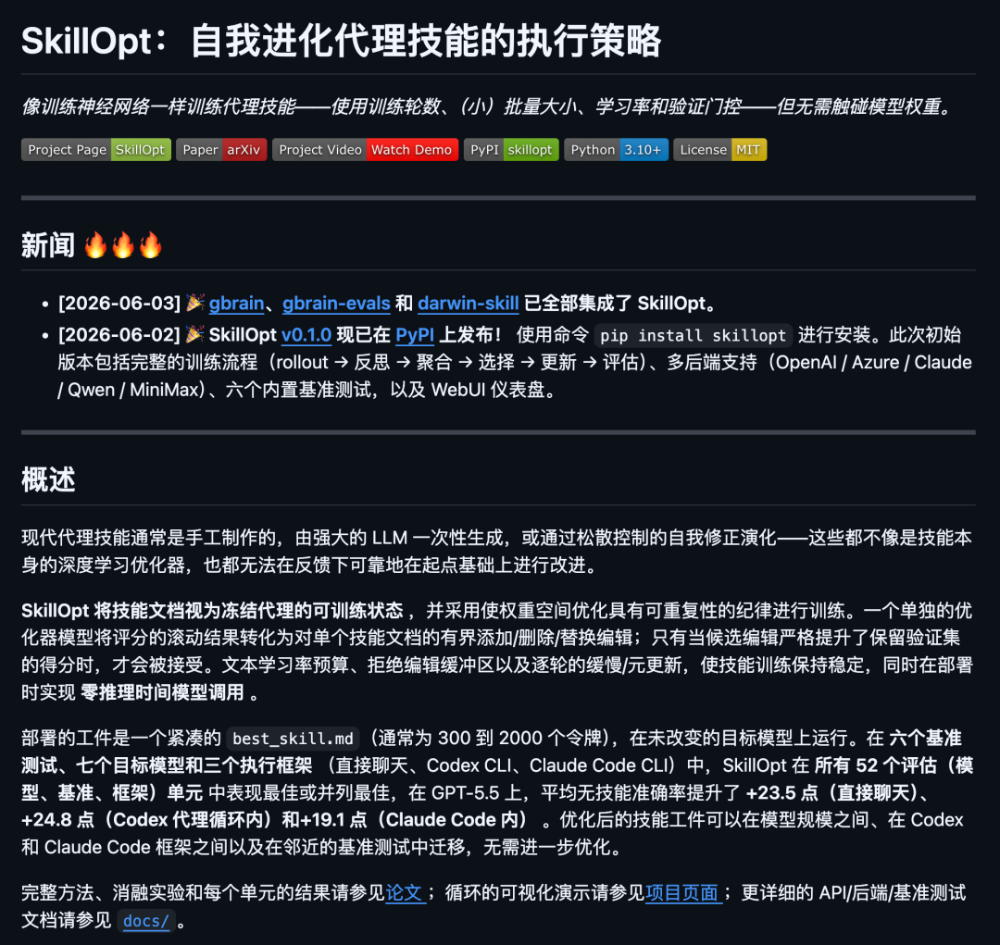
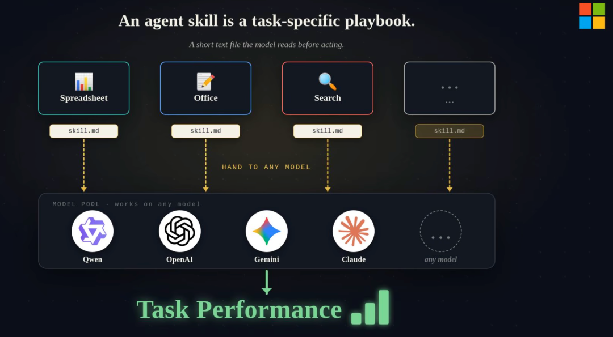
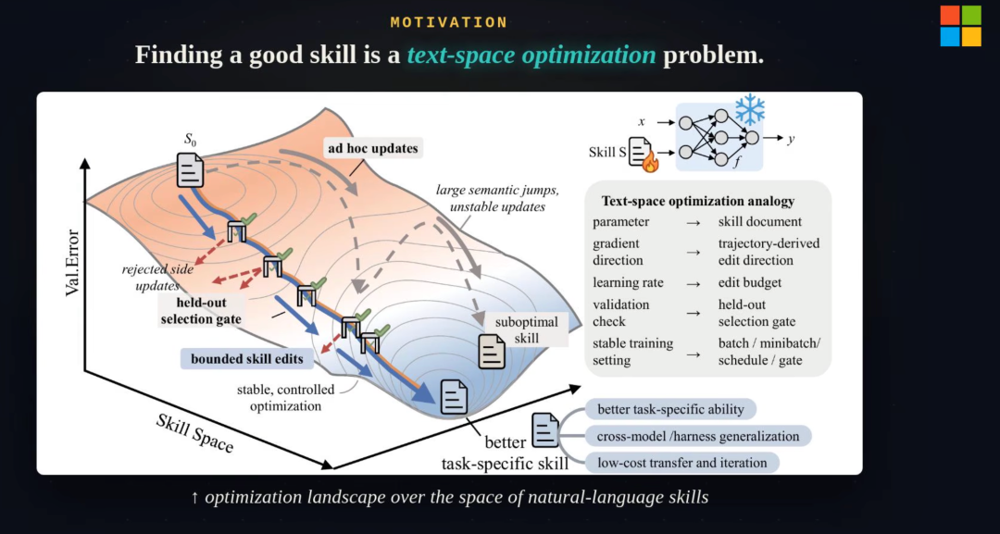
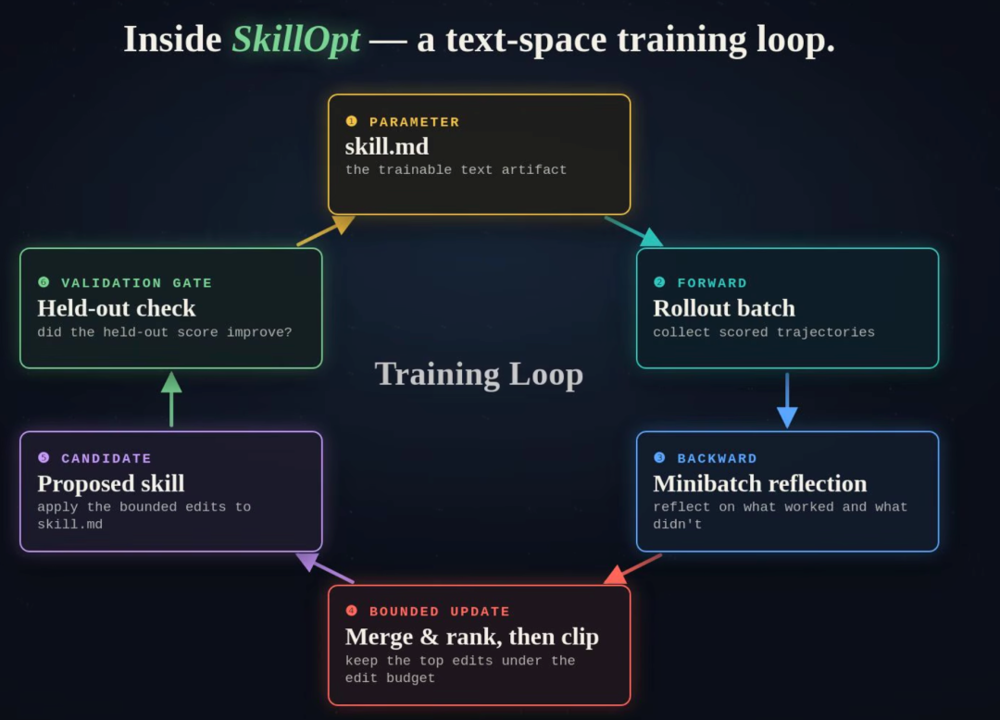

训练神经网络，epoch、batch size、学习率等等整套流程非常成熟，跑一轮下来结果可复现。
但训练 AI Agent 的 skill 呢？
改改 prompt 跑跑看，好就算了不好再改，没有验证集，全凭手感。
微软研究院刚开源了一个叫 SkillOpt 的项目，第一次把训练神经网络的方法论搬到了优化 skill 上。

同一个模型，不微调、不换参数，就优化了一个 Skill.md 文件，skill 的准确率最高涨近 39 分。
GitHub 上线不到一个月，已经拿下 5000+ Star。
01
像训练神经网络一样训练 Skill
SkillOpt 的核心想法其实很直觉：
把 Skill 的 md 文件当作神经网络里的可训练参数，然后用训练神经网络的那套纪律去优化它。
具体的对应关系是这样的：
神经网络的权重 → Skill.md
梯度 → 基于任务轨迹的反思分析
学习率 → 每次文本编辑的幅度预算
验证集 → held-out 数据上的评分门控
epoch → 多轮迭代优化
整个优化过程由一个叫 ReflACT 的六阶段管线驱动，每一步都在做一件事：让 skill 文档变好一点，而且有据可查。

开源地址：https://github.com/microsoft/SkillOpt第一步：Rollout。
用当前的 skill 文档让目标模型跑一批任务，收集每条任务的执行轨迹和得分。
第二步：反思分析。
一个单独的优化器模型（Optimizer Model）分析这些轨迹，找出 skill 文档里哪些地方导致了错误，哪些地方做得好。

第三步：生成补丁。
优化器模型根据分析结果，生成针对性的文本编辑，添加、删除、替换 skill 文档中的具体段落。
这里有个关键设计：每次编辑的幅度受到文本学习率的控制，不会一口气大改，而是小步迭代。

第四步：合并。
把多条补丁合并成一个候选 skill 文档。
第五步：排序筛选。 如果合并后的补丁包含的编辑数量超过预算，就按优先级排序，只保留最重要的几条。
第六步：验证门控。
这是最关键的一步。候选 skill 文档不会直接生效，必须先在验证集上跑一轮评分，只有得分严格优于当前 skill 文档，才会被接受。否则这次修改直接丢弃。

这六步循环往复，多个 epoch 跑下来，skill 文档就从一个粗糙的初版逐渐进化成一个经过多轮验证的最优版本。
还有两个 epoch 级别的全局机制：
Slow Update（慢更新）：
每个 epoch 结束时，对整个训练过程中的经验做一次纵向回顾，提炼出全局性的改进建议，注入到技能文档中。
Meta Skill（元技能）：
在慢更新的基础上，进一步总结出一套更高层次的策略性指导，帮助 skill 文档在后续 epoch 中更有效地优化。
最终产物是一个通常只有 300 到 2000 token 的 best_skill.md 文件。
部署的时候，直接把这个文件作为系统指令喂给模型就行了，不需要任何额外的模型调用，推理成本为零。
没错，你花了好几轮 epoch 训练出来的东西，部署的时候就是一个小小的 Markdown 文件。
02
52 项评测全部领先
SkillOpt 的实验规模非常大，覆盖了 6 个 benchmark、7 个目标模型、3 种执行方式，总共 52 个评测单元。
6 个 benchmark 涵盖了不同类型的任务：
SearchQA：基于搜索的问答 ALFWorld：具身智能体任务 DocVQA：文档问答 LiveMathematicianBench：数学推理 SpreadsheetBench：电子表格代码生成 OfficeQA：工具增强型问答
7 个目标模型包括 GPT-5.5、GPT-5.4、GPT-5.4-nano 等不同规模。
3 种执行方式：直接对话、Codex CLI 代理循环、Claude Code CLI 代理循环。
结果：SkillOpt 在全部 52 个评测单元上都是最佳或并列最佳。
在 GPT-5.5 上的提升尤为显著：
直接对话模式：平均准确率提升 +23.5 分 Codex 代理循环：提升 +24.8 分 Claude Code 代理循环：提升 +19.1 分
部分场景最高提升达到 +39.0 分。
而且 SkillOpt 的对手是 TextGrad、GEPA 这类 prompt 优化方法，Trace2Skill、EvoSkill 这类技能演化方法，以及人类专家手写的技能和强模型一次性生成的技能。
SkillOpt 把它们全部压了下去。
还有一个很实用的发现：优化后的 skill 文档具有迁移能力。
在一个模型上训练出来的技能，可以直接用在另一个模型上，效果虽然有损但依然显著。
在 Codex 上优化的技能，拿到 Claude Code CLI 上也能用。甚至跨 benchmark 也有一定的泛化性。
你不需要为每个模型、每个场景都跑一轮完整训练，一次优化的产出可以复用到多个地方。
03
怎么用
安装很简单：
git clone https://github.com/microsoft/SkillOpt.gitcd SkillOptpip install -e .
然后配置 API 密钥。SkillOpt 支持多种后端：
# Azure OpenAI（推荐）export AZURE_OPENAI_ENDPOINT="https://your-resource.openai.azure.com/"export AZURE_OPENAI_API_KEY="your-key"# Anthropic Claudeexport ANTHROPIC_API_KEY="sk-ant-..."# Qwen（本地 vLLM）export QWEN_CHAT_BASE_URL="http://localhost:8000/v1"export QWEN_CHAT_MODEL="Qwen/Qwen3.5-4B"
一条命令启动训练：
python scripts/train.py \--config configs/searchqa/default.yaml \--split_dir /path/to/your/searchqa_split \--azure_openai_endpoint https://your-resource.openai.azure.com/ \--optimizer_model gpt-5.5 \--target_model gpt-5.5
这里有两个模型角色：optimizer_model 是负责分析轨迹、生成补丁的优化器模型，target_model 是实际执行任务的目标模型。
你可以用强模型做优化器，弱模型做目标，用前者的智慧去提升后者的表现。
训练完之后，会在输出目录下生成 best_skill.md，这就是你训练出来的最终技能文档。
如果你只想评估已有的技能，不需要重新训练：
python scripts/eval_only.py \--config configs/searchqa/default.yaml \--skill ckpt/searchqa/gpt5.5_skill.md \--split valid_unseen \--split_dir /path/to/searchqa_split \--azure_openai_endpoint https://your-resource.openai.azure.com/
项目在 ckpt/ 目录下预置了一部分 GPT-5.5 的优化技能文件，可以直接拿来用。
SkillOpt 还自带了一个 WebUI 监控面板，可以实时观察训练过程：
pip install -e ".[webui]"python -m skillopt_webui.app
项目的架构设计得比较干净，如果你想接入自己的 benchmark 或者自己的模型后端，都有清晰的扩展接口。
加一个新 benchmark 就是写一个 dataloader、一个 rollout 函数和一个初始技能种子文件。
加一个新后端就是写一个 backend 模块然后注册到路由里。
项目里已经有 Azure OpenAI、Claude、Qwen、MiniMax、Codex CLI、Claude Code CLI 六个后端的实现可以参考。
开源地址：https://github.com/microsoft/SkillOpt论文地址：https://arxiv.org/abs/2605.23904项目主页：https://microsoft.github.io/SkillOpt/
04
点击下方卡片，关注逛逛 GitHub
这个公众号历史发布过很多有趣的开源项目，如果你懒得翻文章一个个找，你直接关注微信公众号：逛逛 GitHub ，后台对话聊天就行了：